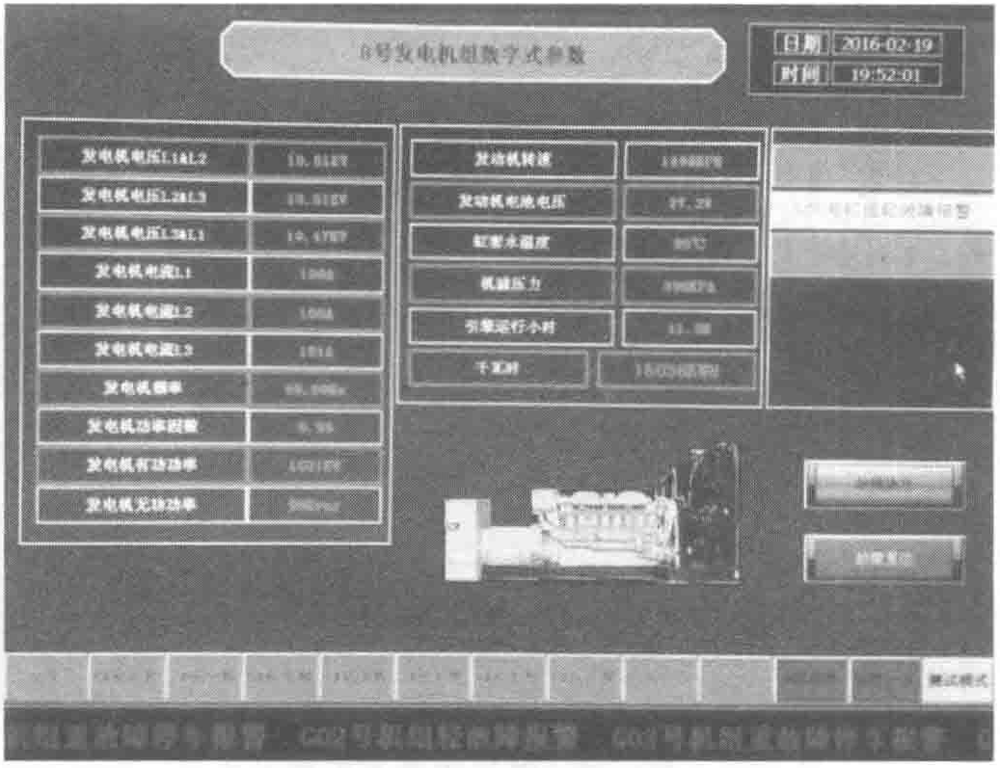
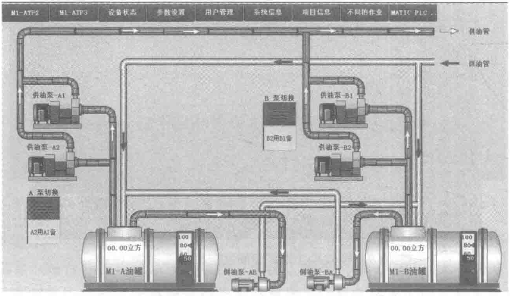

3）供储油系统介绍
本项目每个数据中心模块的供储油系统独立设置、物理隔离。每个模块配置两个25立方埋地柴油储罐，每个柴油罐配置一用一备2台供油泵，两罐之间配置一台倒油泵。储罐区至机房日用油箱间输油管路为双环路设计，具备在线检修及容错能力。
供储油系统上电后PLC系统自动检索运行，当检测到日用油箱液位信号，按照油箱高低液位阀值启停油泵、控制油泵的切换。系统在自动运行时根据检测到的日用油箱供油液位限值信号后启动A1泵（见图10-11和图10-12），当A1供油泵有故障时自动延时切换至A2供油泵运行。运维后台实时监视油泵运行状态。
